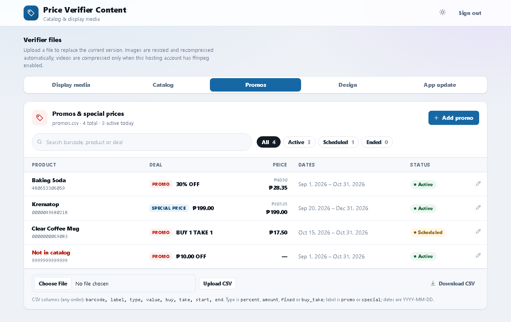
The guide is split by who uses each part. Store staff only need Part B. Store administrators use Parts C and D. IT staff installing the server use Part E.
Customers scan a product at a Price Verifier scanner and see its name and price. Between scans the scanner shows your store's logo, banners, videos and a scrolling message.
| Part | What it does |
|---|---|
| Scanner app | Runs on each Price Verifier scanner (Datalogic Smart Portal and similar Android devices). Keeps its own copy of the product list, so price checks keep working even if the network drops. |
| Price Verifier Server | Installed once on a store PC or server. Holds the catalog, display media, scrolling message, promos, design settings and app updates that the scanners download. |
| Web portal | The server's web page. Administrators open it in a browser on any computer in the store network to upload files and manage promos and design. |
The scanner needs no login for price checks. Customers and staff simply scan.
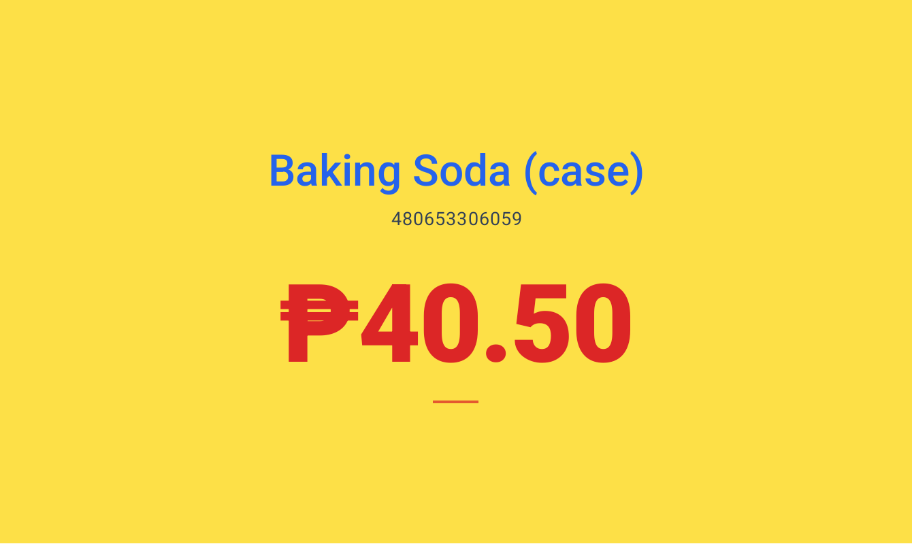
If the barcode isn't in the scanner's product list, the screen shows No product record — Ask for assistance. Check the price another way and tell an administrator, who can add the item (section 6 or 11).
A red Demo Mode. Contact Newton Scanning System Inc. banner means the device isn't authorized to run the app. See section 13.
When a scanned product has a promo or special price, the scanner shows it automatically. There's nothing to do on the scanner.
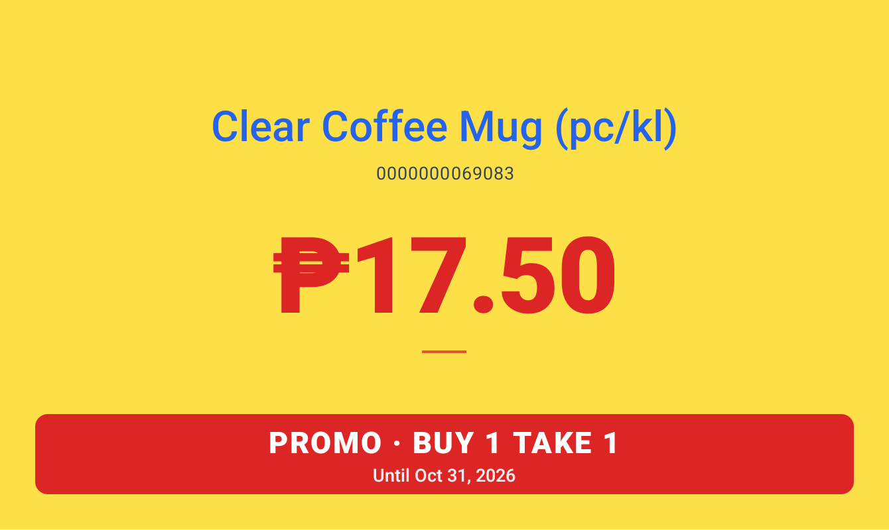
| What you see | Meaning |
|---|---|
| Big price + crossed-out price above it | The big number is what the customer pays. The crossed-out one is the regular price. |
| PROMO red banner | A promotion, for example 50% OFF, ₱20.00 OFF or SAVE ₱8.25. |
| SPECIAL PRICE blue banner | A special price. It works the same way; only the label and colour differ. |
| BUY 1 TAKE 1, BUY 2 TAKE 1… | A buy-and-take deal. The regular price stays the big number. |
| "Until Oct 31, 2026" | The last day of the promo. The day after, the scanner shows the regular price again by itself. |
Use any computer on the store network. Your IT staff give you the address, which looks like http://192.168.0.130:8000.
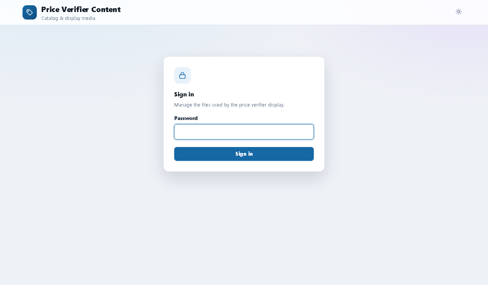
The portal has five tabs:
| Tab | Use it to |
|---|---|
| Display media | Upload the catalog file, logo, banner, idle video, scheduled media, scrolling message and the Android app; set the playback order. |
| Catalog | Search, add, edit and delete products. |
| Promos | Create promos and special prices, or upload them from a CSV file. |
| Design | Set the scanners' colours, logo size, store name and media timing for every scanner at once. |
| App update | Describe a new app version for the scanners' update prompt. |
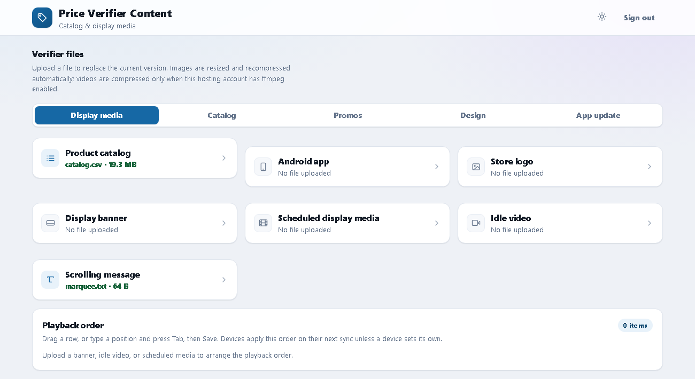
| Card | Accepted files | Notes |
|---|---|---|
| Product catalog | .csv or .txt | The full product list. Uploading replaces the whole catalog. Format: Appendix A. |
| Android app | .apk | A new scanner app version. Scanners offer it as an update (section 9). |
| Store logo | PNG or JPG | Shown on the home screen. Resized automatically. |
| Display banner | PNG or JPG | The default home-screen image. Resized automatically. |
| Scheduled display media | JPG, PNG or MP4 | Time-limited promotional images and videos. They only play once renamed with an end date (Appendix C). |
| Idle video | MP4 | The default home-screen video. |
| Scrolling message | .txt | The text in the scrolling bar at the bottom of the home screen. |
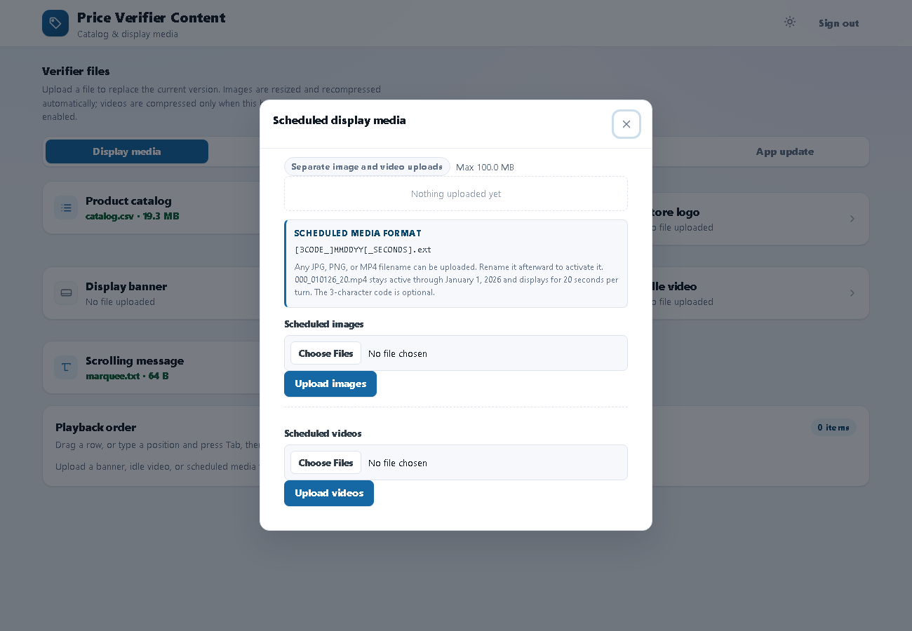
103126.jpg (shows until October 31, 2026) or 103126_15.jpg (15 seconds per turn). See Appendix C.Below the cards, Playback order lists the banner, idle video and active scheduled media. Drag a row, or type a position and press Tab, then save. Scanners use this order after their next sync, unless a scanner has its own order set in its Admin screen.
Browse and correct the hosted product list without re-uploading the whole file.
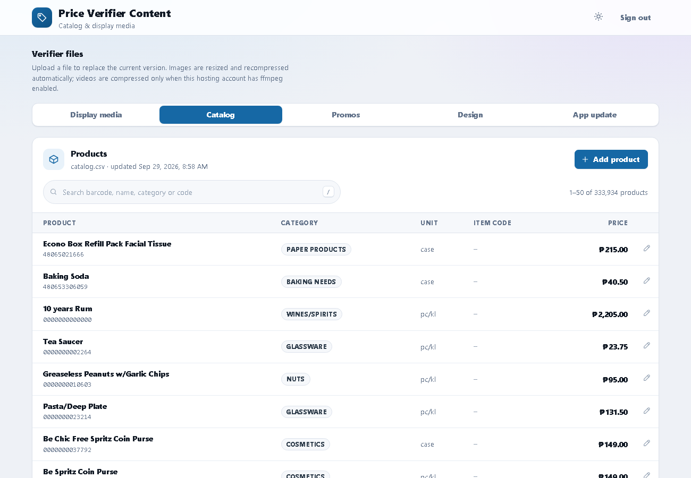
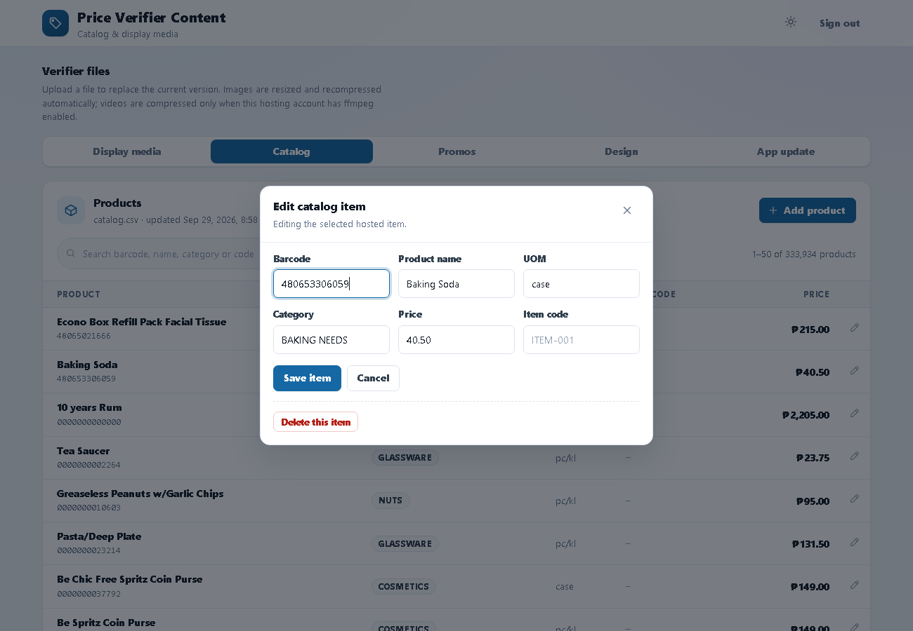
Promos and special prices are stored separately from the catalog, so uploading a new catalog never removes them.
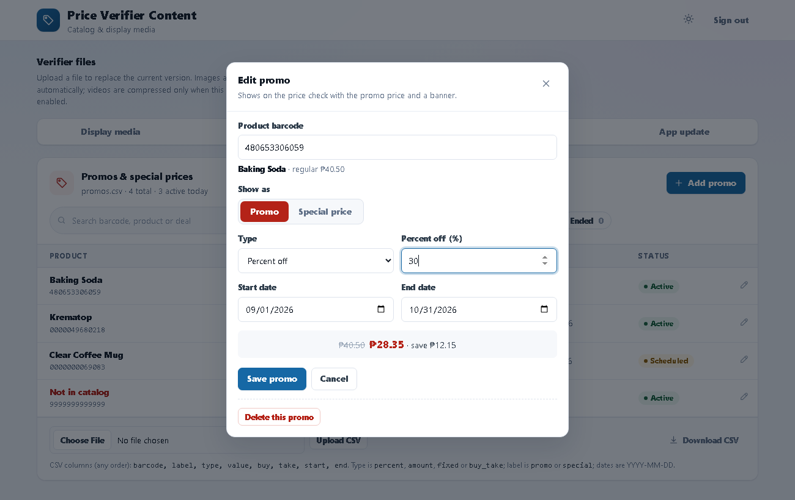
| Type | You enter | Scanner shows |
|---|---|---|
| Percent off | e.g. 50 (%) | 50% OFF, with the reduced price |
| Amount off | e.g. 20.00 (₱) | ₱20.00 OFF, with the reduced price |
| Fixed promo price | e.g. 99.00 (₱) | The fixed price and the amount saved |
| Buy X Take Y | Buy and Take quantities | BUY 1 TAKE 1 (the regular price stays) |
Set how every scanner connected to the server looks, from one place.
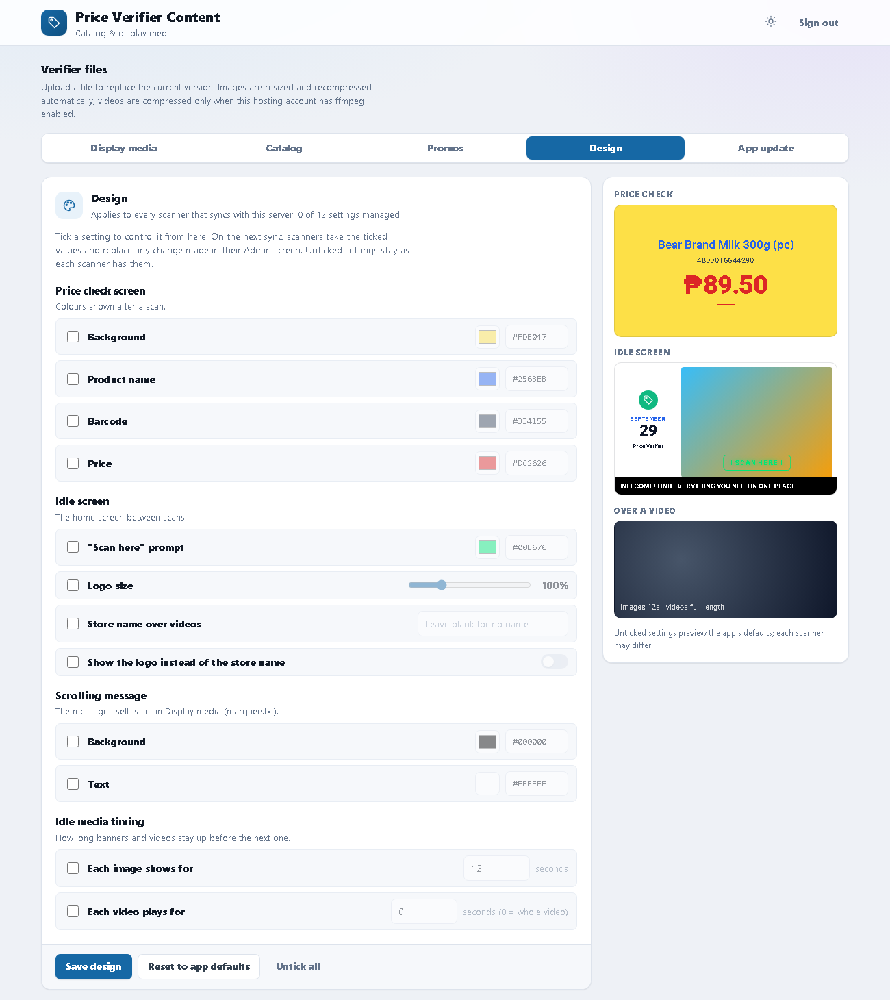
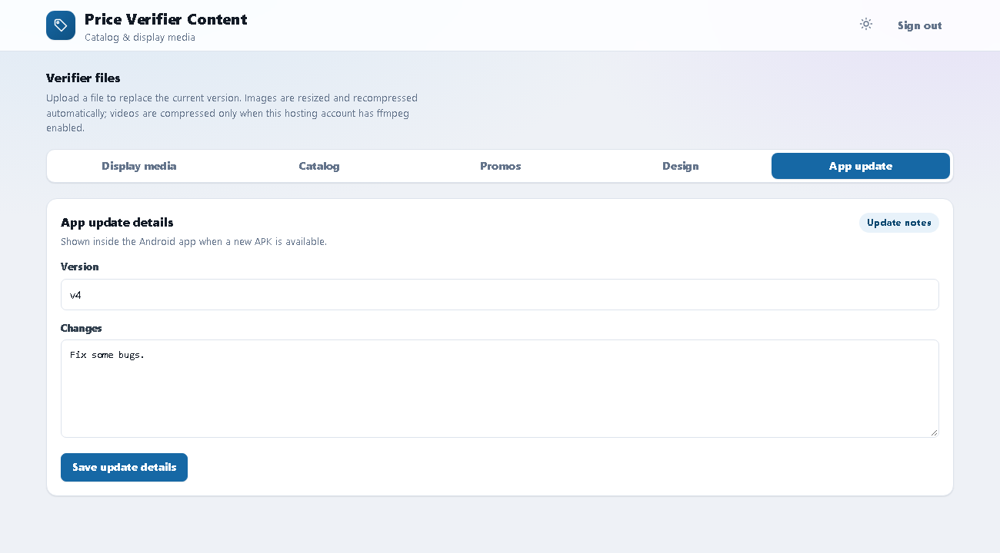
v6) and a short list of changes, then choose Save update details.1234.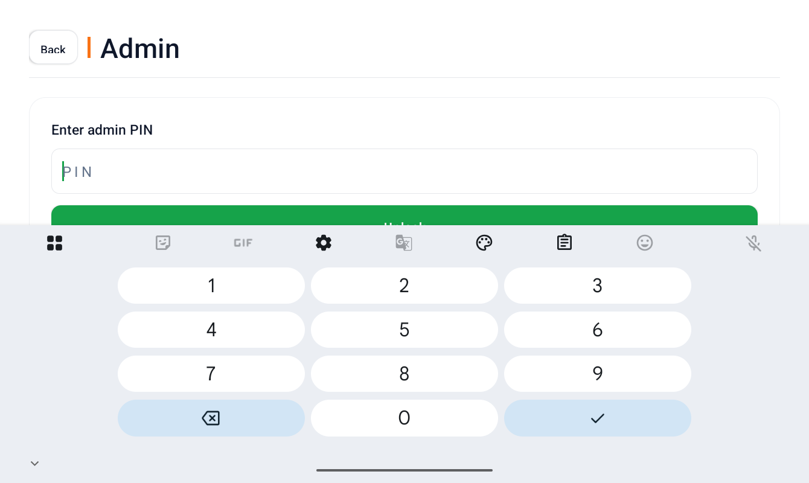
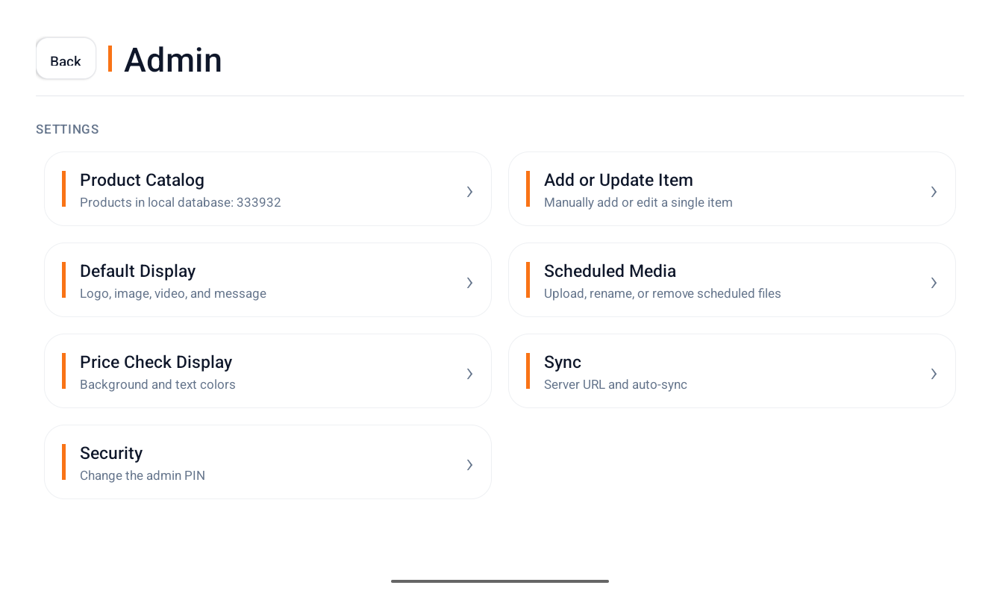
| Module | What you can do |
|---|---|
| Product Catalog | See how many products are on the scanner. Import TXT or CSV loads a product file from the device (Appendix A). View and Edit Items searches, edits and deletes products, and manages promos for one item (section 12). Clear Product Database removes all products from this scanner; settings and media stay. |
| Add or Update Item | Add one product by hand: barcode, name, price and optional unit, category and item code. An existing barcode is updated. |
| Default Display | Logo and logo size, default image, default video, store name shown over videos (or the logo instead), scrolling message and its colours, "SCAN HERE" colour, and image/video display times. |
| Scheduled Media | Upload, rename or remove scheduled images and videos stored on this scanner (naming: Appendix C). |
| Price Check Display | Background, product name, barcode and price colours, with a live preview. |
| Sync | Server URL, manual sync and daily auto-sync (below). |
| Security | Admin PIN. Changing it is disabled in this version. |
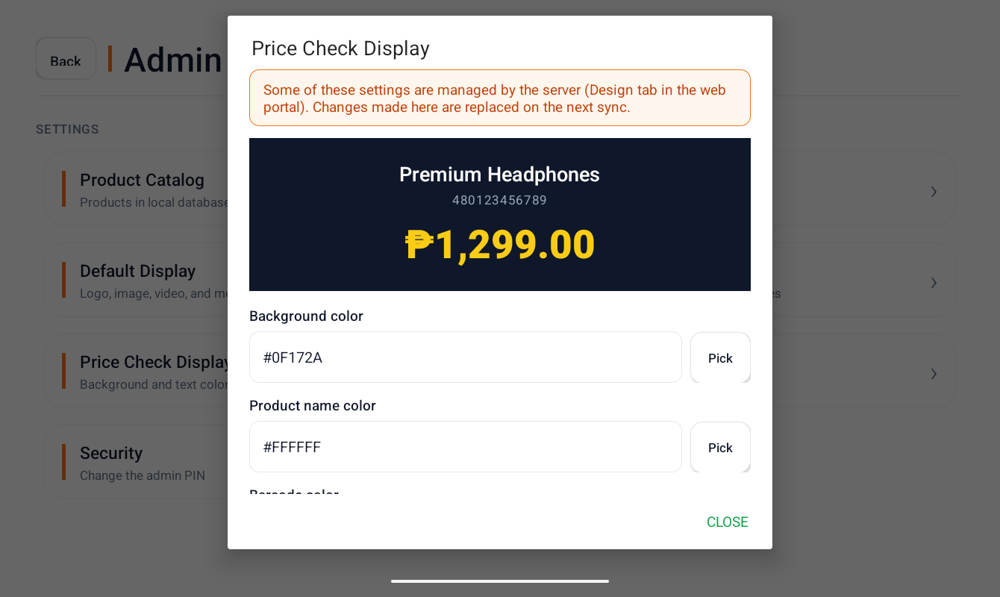
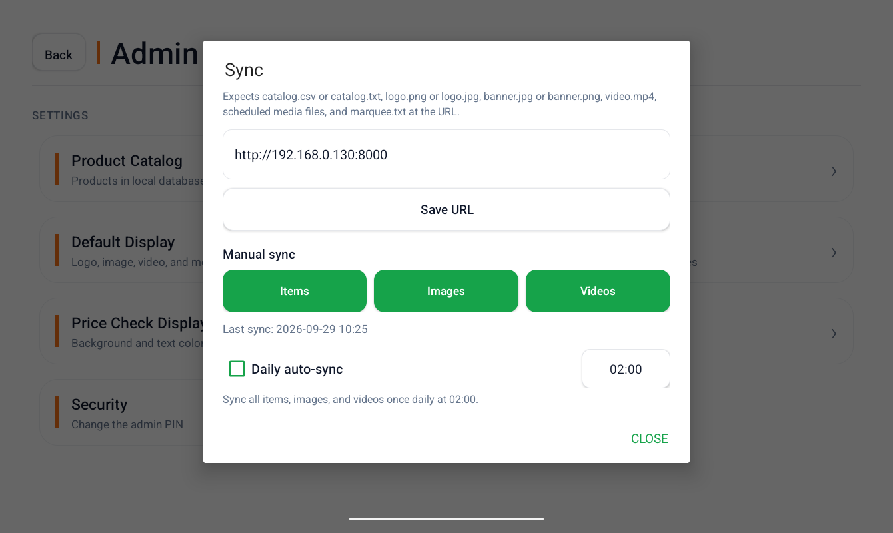
http://192.168.0.130:8000. Choose Save URL.You can give one scanner its own promo, for example for a local clearance:
The app only runs fully on scanners whose serial numbers are built into the app.
| Item | Requirement |
|---|---|
| Operating system | 64-bit Windows 10 or 11, Windows Server 2016 or later, or 64-bit (x86_64) Linux with systemd (Ubuntu, Debian, RHEL and similar). |
| Network | The server and the scanners on the same local network. A fixed IP address (DHCP reservation) for the server is strongly recommended, because scanners use its address. |
| Disk | About 200 MB for the program plus room for the catalog and media (a 330,000-product catalog is about 20 MB). |
| Internet | Not needed. The installer contains everything (PHP, web server and the Microsoft Visual C++ runtime for Windows). |
| Rights | Administrator (Windows) or root (Linux) to install. |
PriceVerifierServer-Windows-1.0.0.zip to the server and extract it (right-click > Extract All).install.cmd and allow administrator access.http://192.168.0.130:8000.| What gets set up | Details |
|---|---|
| Program and data | C:\PriceVerifier. The portal and its data are in portal\; logs are in logs\. |
| Automatic start | Task Scheduler task Price Verifier Server. It runs as SYSTEM at boot, before anyone logs in, and restarts parts that stop. |
| Local network only | Windows Defender Firewall rule Price Verifier Server (local subnet only). The web server also refuses non-private addresses, even if the port is forwarded on the router. |
| Upgrade | Run the installer of a newer version. Program files are replaced; data and the port are kept. |
| Uninstall | C:\PriceVerifier\uninstall.cmd (as administrator). It asks whether to keep the portal data. |
Unattended install:
powershell -ExecutionPolicy Bypass -File install.ps1 -Port 8000 -ImportFrom "" -Quiet
tar -xzf PriceVerifierServer-Linux-1.0.0.tar.gz cd PriceVerifierServer-Linux-1.0.0 sudo bash install.sh
| What gets set up | Details |
|---|---|
| Program and data | /opt/price-verifier, run by the service user priceverifier. |
| Automatic start | systemd service price-verifier: systemctl status price-verifier |
| Local network only | ufw or firewalld rules for the local subnet when a firewall is active; the web server itself refuses non-private addresses. |
| Logs | journalctl -u price-verifier and /opt/price-verifier/logs |
| Uninstall | sudo /opt/price-verifier/uninstall.sh |
Unattended install: sudo PORT=8000 IMPORT_FROM= QUIET=1 bash install.sh
C:\PriceVerifier\portal or /opt/price-verifier/portal). It holds the catalog, media, promos (promos.csv), design (design.json) and the portal password.upload-config.php in the portal folder, then open the portal to create a new password. Nothing else is lost.supervisor.log (starts and restarts), caddy-console.log (web server), access.log (requests), php-errors.log (portal errors).sudo systemctl restart price-verifier).| Problem | What to check |
|---|---|
| Scanner says "Sync failed" or the sync time is old | The URL in Admin > Sync includes http:// and the port. The scanner is on the store network. The server PC is on, and http://localhost:8000 opens on it. |
| Portal doesn't open from other PCs | Use the server's LAN address, not localhost. The PC must be on the same local subnet (the firewall rule only allows the local subnet). |
| "This server is only available on the local network." | The request came from outside the private network (for example through a router port forward). This is intentional. |
| Server didn't start after a reboot | Task Scheduler > Price Verifier Server exists and is enabled; check logs\supervisor.log. Another program may have taken the port: re-run the installer to pick a new port, then update the scanners. |
| A product shows "No product record" | Check the product in the portal's Catalog tab. After adding it, sync Items on the scanner. |
| A promo doesn't appear | In the Promos tab: status Active today, not "Not in catalog", and the promo price is below the regular price. Then sync Items. Check the scanner's date is correct. |
| A colour change on a scanner keeps reverting | That setting is ticked in the portal's Design tab (the scanner shows an orange note). Change it in the portal, or untick it there. |
| Scheduled media doesn't play | The file must be renamed to the scheduled format (Appendix C) and its date must not have passed. |
| Update prompt doesn't appear | The APK is uploaded in Display media, its version is higher than the installed app, and the scanner's server URL is correct. |
| Catalog upload skipped rows | Rows need a barcode, name and valid price. In Excel, format the barcode column as Text so long barcodes aren't turned into numbers like 4.80653E+11. |
A CSV (or comma-separated TXT) file with a header row. Columns are matched by header name, so they can be in any order, and extra columns are ignored.
barcode,name,uom,category,price,item_code 480653306059,Baking Soda,case,BAKING NEEDS,40.50, 4800016644290,"Bear Brand Milk 300g",pc,DAIRY,89.50,BB300
| Column | Required | Also accepted as |
|---|---|---|
barcode | Yes | bar code, upc, ean, code. EAN-13, UPC-A, UPC-E and EAN-8 are supported. |
name | Yes | product, description, item, item name |
price | Yes | amount, retail, srp, selling price. A plain number such as 89.50. |
uom | No | unit, unit of measure |
category | No | department |
item_code | No | item code, itemcode, sku, item sku |
- or _ count as spaces.Used by the Promos tab's Upload CSV (replaces all promos). Columns in any order:
barcode,label,type,value,buy,take,start,end 480653306059,promo,percent,50,,,2026-10-01,2026-10-31 0000049680218,special,fixed,199.00,,,2026-09-20,2026-12-31 0000000069083,promo,buy_take,,1,1,2026-10-15,2026-10-31
| Column | Values |
|---|---|
barcode | The product barcode (required). |
label | promo or special. |
type | percent, amount, fixed or buy_take (required). |
value | Percent off (1–100), amount off in pesos, or the fixed promo price. Leave blank for buy_take. |
buy, take | Quantities for buy_take, for example 1 and 1. |
start, end | Dates as YYYY-MM-DD; Excel's M/D/YYYY is also accepted. Both days are included. |
| File name | Meaning |
|---|---|
MMDDYY.jpg / .png / .mp4 | Plays until the end of that date. Images use the default image time; videos play once in full. |
MMDDYY_SECONDS.ext | Plays until that date, for the given seconds each turn. |
CODE_MMDDYY_SECONDS.ext | The same, with an optional 3-character code in front to tell files apart. |
Example: 000_010126_20.mp4 stays active through January 1, 2026 and displays for 20 seconds each time its turn comes up. Don't name scheduled files default.*: the default banner and video are uploaded in their own cards.
| File in the portal folder | Contents |
|---|---|
catalog.csv / catalog.txt | Product catalog. |
promos.csv | Promos and special prices. |
design.json | Settings ticked in the Design tab. |
logo.*, banner.*, video.mp4 | Default display media. |
marquee.txt | Scrolling message. |
media-order.txt, scheduled-media.txt | Playback order and the scheduled media list. |
price-verifier.apk, app-update-info.json | App update file and its details. |
upload-config.php | The portal password (stored as a secure hash). Never served to browsers. |